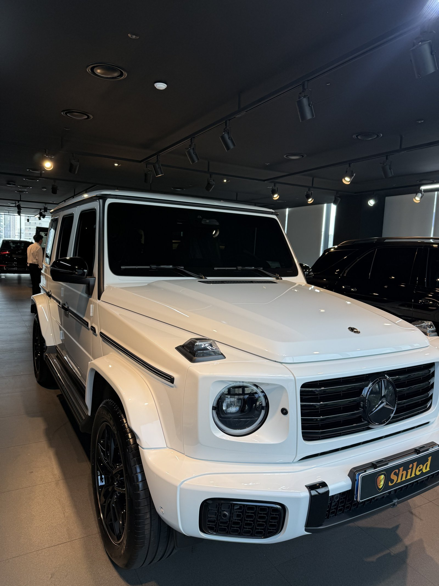
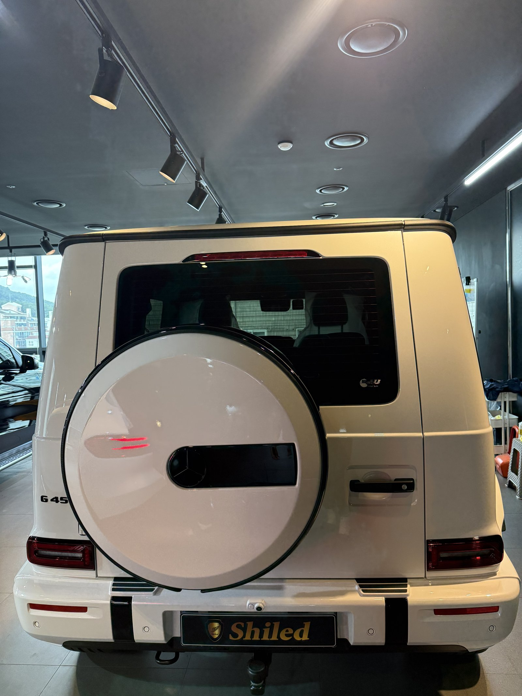
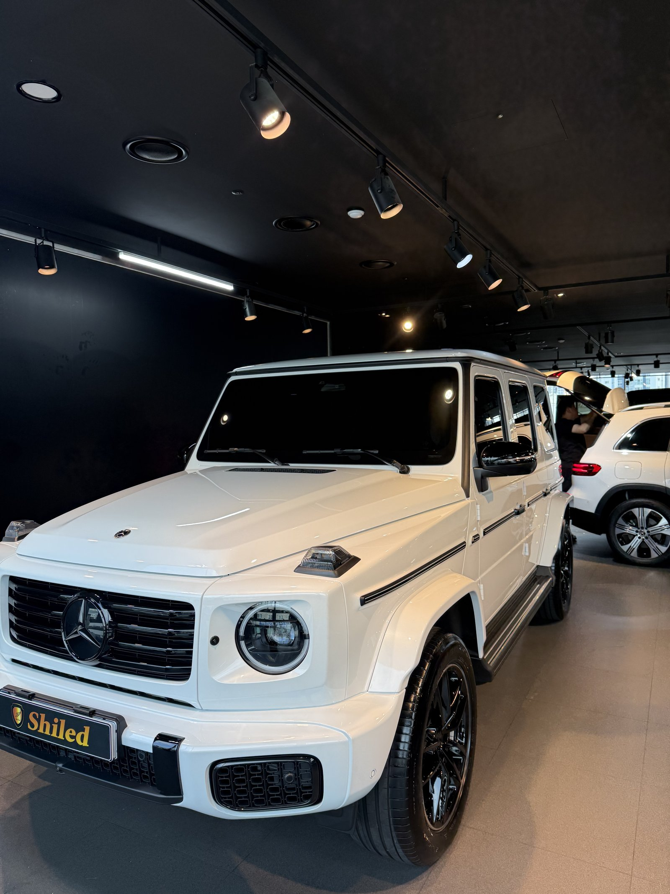
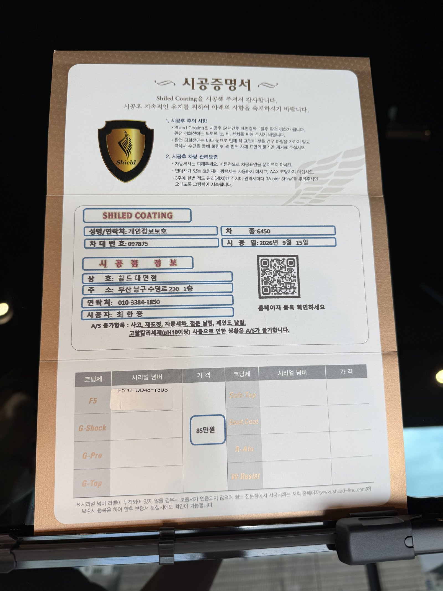

벤츠 G450, 백색입니다.
부산 유리막코팅으로 출고 전 F5 유리막코팅을 진행했습니다.

둥근 헤드램프와 각진 펜더, G바겐 특유의 실루엣이 전시장 조명 아래서도 확실히 다릅니다.
곡면이 없는 차, 마감 기준이 다릅니다
평면이 많을수록 얼룩이 남으면 오히려 더 눈에 띕니다.
세단은 곡면이 빛을 분산시켜 경계가 자연스럽게 묻히지만, G바겐은 보닛·도어·펜더가 각각 평평한 판으로 딱 떨어집니다. 그래서 면 하나하나를 구간별로 나눠 도포해, 이음매가 남지 않도록 마감했습니다.

테일게이트 스페어타이어까지
G바겐의 상징인 테일게이트 마운트 스페어타이어도 예외 없이 코팅합니다.
둥근 커버는 평면 패널과 곡률이 완전히 달라, 같은 압력으로 밀면 도포량이 불균일해지기 쉽습니다. 곡률이 바뀌는 지점마다 손의 각도를 바꿔가며 올렸습니다. 코팅제는 대표가 화학공학 전공으로 직접 개발·제조한 제품입니다.
기술자의 팁
신차라고 바로 코팅을 올리지 않습니다. 운송·보관 중 묻은 미세 오염을 디테일링 세차와 탈지로 걷어낸 뒤에 올립니다. 깨끗한 바탕 위에 올려야 코팅이 제대로 밀착합니다.
백색 신차에 왜 F5인가
F5는 색감 깊이를 끌어올려 글로시함을 극대화하는 코팅입니다.
백색은 자칫 평면적으로 보이기 쉬운 색인데, 여기에 각진 차체까지 더해지면 더 밋밋해 보일 수 있습니다. F5를 올리면 각 면의 경계마다 반사광이 또렷하게 잡혀, 오히려 각진 실루엣이 입체적으로 살아납니다.
둥근 헤드램프와 각진 그릴이 마주 보는 정면도 마찬가지입니다. 곡면과 직선이 만나는 지점일수록 코팅막이 고르게 앉았는지가 바로 드러납니다.

시공증명서를 함께 드립니다
모든 시공 차량에 시공증명서를 드립니다.
차종·시공일·코팅제 시리얼 번호가 적혀 있고, 홈페이지에 등록해 보증을 받으실 수 있습니다. 이 차는 F5 코팅으로 기록돼 있습니다.

차종·시공일·코팅제 시리얼이 기재된 시공증명서
자주 묻는 질문
Q. G바겐처럼 각진 차체는 코팅이 다른가요?
A. 곡면이 없는 평면 패널이라 얼룩이 남으면 오히려 더 눈에 띕니다. 보닛·도어·펜더가 각각 평평한 면으로 분리돼 있어, 면마다 구간을 나눠 도포해야 경계 없이 마감됩니다.
Q. 백색 신차에는 어떤 코팅이 좋나요?
A. 이 차는 F5로 진행했습니다. F5는 색감 깊이를 끌어올려 글로시함을 극대화합니다. 백색은 자칫 밋밋해 보이기 쉬운데, F5를 올리면 표면에 맺히는 반사광이 또렷해져 더 깊고 입체적으로 보입니다.
Q. 신차코팅도 전처리를 하나요?
A. 합니다. 신차라도 운송·보관 중 미세 오염이 묻습니다. 디테일링 세차와 탈지로 표면을 정리한 뒤 코팅을 올려야 제대로 밀착합니다.
Q. 쉴드광택 위치와 예약은 어떻게 하나요?
A. 부산 남구 유엔로220 1F 쉴드광택입니다. 예약·상담은 010-3384-1850, 대표 최한중이 직접 상담하고 책임 시공합니다.
새 차일수록 시작점이 다릅니다. 가장 깨끗할 때 입혀두십시오.
제품을 직접 만드는 사람이 직접 시공합니다.
부산에서 신차코팅을 고민 중이시면 편하게 연락 주십시오.
어떤 차를 타냐보다 어떻게 타냐가 중요합니다~!
시공 중에는 전화를 받지 못할 때가 많습니다.
카카오톡으로 차종과 원하시는 시공을 남겨주시면 확인 후 답변드립니다.
쉴드광택 · 부산 남구 유엔로220 1F · 대표 최한중